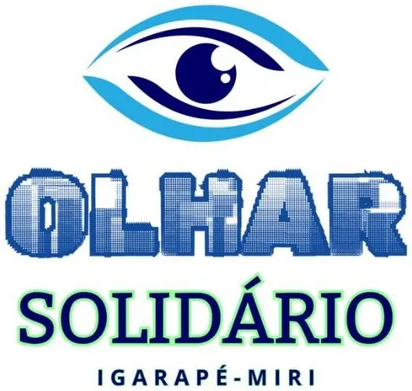
Projeto SocialEmpresa registrada
CNPJ: 55.818.360/0001-33
Instagram oficial
Consultoria técnica
Nossa experiência
Do planejamento à execução completa.
A AgroVisão desenvolve projetos integrais, do diagnóstico inicial até a prestação de contas final, garantindo resultados sustentáveis e alinhados às exigências legais.
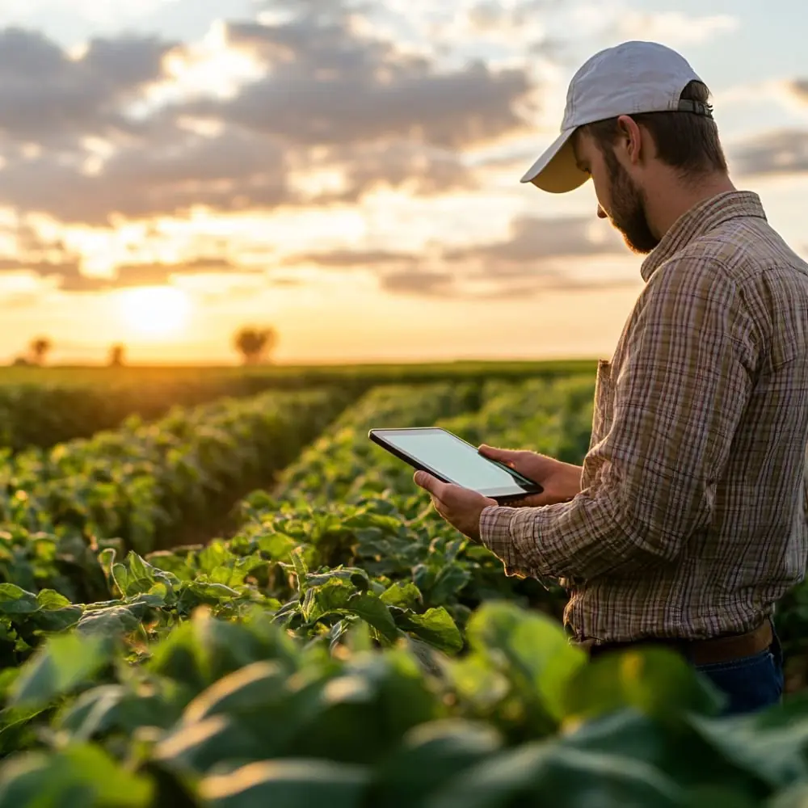
1
Planejamento e Diagnóstico
Avaliação técnica do contexto e desenho da estratégia ideal.
2
Elaboração Técnica
Desenvolvimento do projeto completo com memorial, planilhas e documentação.
3
Captação de Recursos
Identificação e submissão a editais, fundos e linhas de crédito.
4
Gestão e Execução
Acompanhamento completo com relatórios periódicos e controle de metas.
5
Prestação de Contas
Documentação contábil, relatórios finais e regularização junto aos financiadores.
Áreas de atuação
Categorias de projetos
Atuamos em múltiplas frentes do desenvolvimento sustentável, social e econômico para a Amazônia Legal.
Agropecuários
Ambientais
Projetos Sociais
Projetos Culturais
Projetos Esportivos
Projetos para Mulheres
Agricultura Familiar
Capacitações
Bioeconomia
Desenvolv. Sustentável
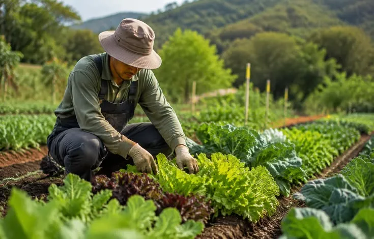
Projeto Social · Amazônia Legal
Programa de Desenvolvimento Rural Sustentável
Projeto de capacitação e estruturação técnica voltado para comunidades ribeirinhas e assentamentos da Amazônia, com foco em agroecologia, regularização fundiária e acesso a políticas públicas.
- Diagnóstico e mapeamento de 120 famílias beneficiárias
- Regularização fundiária coletiva com emissão de títulos
- Capacitação em agroecologia e manejo sustentável
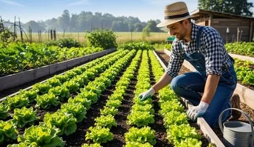
Capacitação · Agricultura Familiar
Programa de Capacitação em Gestão Rural
Formação técnica e gerencial para agricultores familiares, abrangendo desde o manejo sustentável até a comercialização e o acesso aos mercados institucionais.
- 80 agricultores capacitados em 5 municípios paraenses
- Planos de negócio individualizados elaborados
- Articulação com mercados locais e PNAE
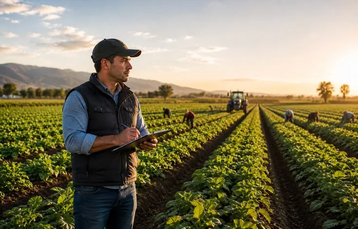
Ambiental · Licenciamento
Regularização Ambiental de Propriedades Rurais
Levantamento, diagnóstico ambiental e regularização completa de propriedades rurais no Pará, incluindo CAR, LAR, PCARP, PRAP e Licença Ambiental junto à SEMAS-PA.
- Inscrição no CAR e revisão de passivos ambientais
- Licença Ambiental obtida junto à SEMAS-PA
- Assessoria para adequação ao Novo Código Florestal
Portfólio
Projetos desenvolvidos
Filtre por categoria e clique em um projeto para conhecer os detalhes. Mais de vinte iniciativas realizadas na Amazônia Legal.
Projeto Social
Super Liga Esportiva, Esporte em Ação
Ver projeto →Projeto Social
Felicidade não tem idade
Ver projeto →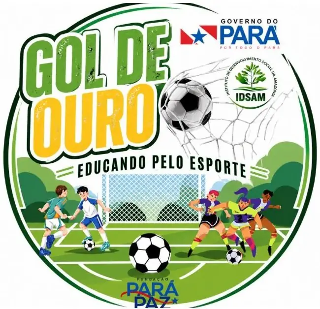
Projeto SocialGol de ouro: educando pelo esporte
Ver projeto → Agricultura Familiar
Agricultura FamiliarAçaí o Fruto Amazônico
Desenvolvido com foco no fortalecimento da cadeia produtiva do açaí.
Ver projeto →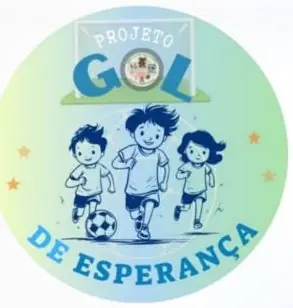
Projeto SocialGol de Esperança
Ver projeto → Cultural
CulturalIaçá
Valorização das tradições, dos saberes e da cultura ribeirinha como expressão da identidade amazônica.
Ver projeto →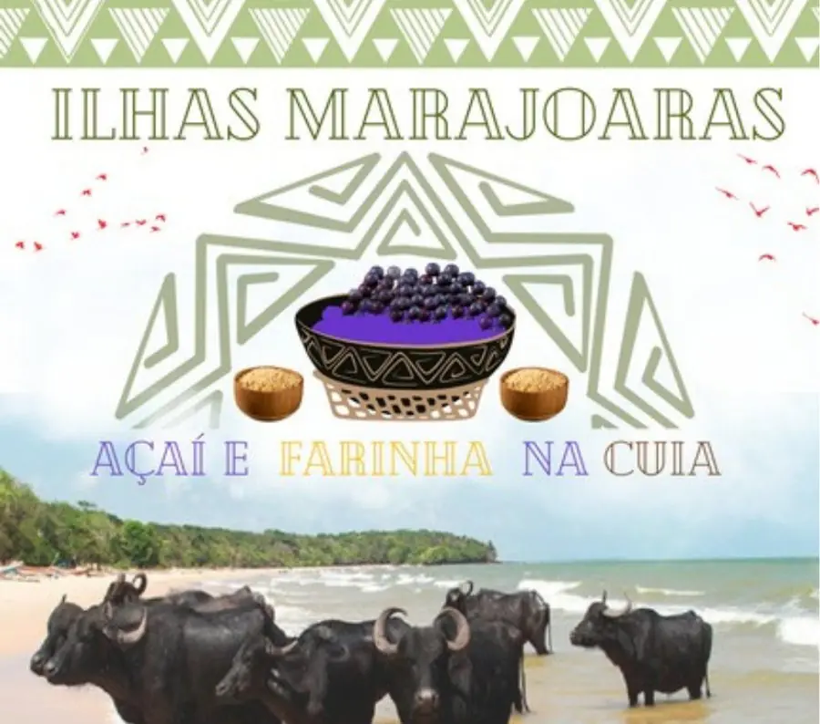
Agricultura FamiliarIlhas Marajoara — Açaí, Farinha e Cuia
Fortalecimento das cadeias produtivas tradicionais do Marajó, agregando valor à produção regional.
Ver projeto →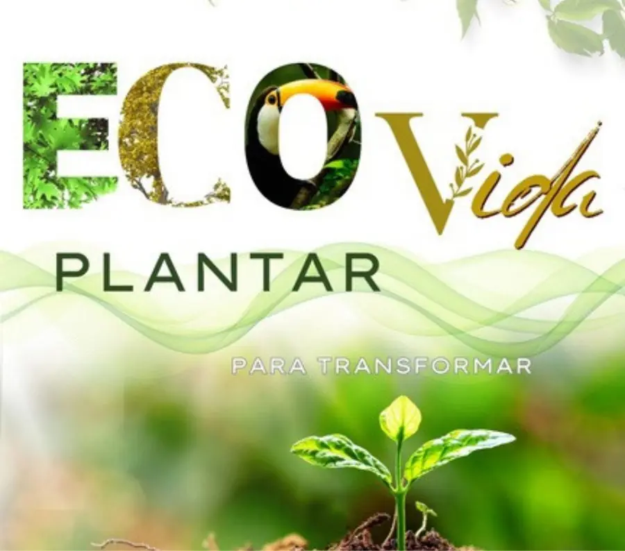
AmbientalEco Vida Plantar
Projeto de reflorestamento e educação ambiental com valorização das espécies nativas e participação comunitária.
Ver projeto → Agricultura Familiar
Agricultura FamiliarExpandindo a Criação de Abelhas
Fortalecimento da apicultura familiar por meio de manejo sustentável e valorização da produção de mel.
Ver projeto → Ambiental
AmbientalCotijuba Mais Verde
Ações de recuperação ambiental e arborização para promover sustentabilidade e valorização do território.
Ver projeto → Projeto Social
Projeto SocialBola pra frente
Futebol para veteranos que promove bem-estar físico e mental, integração social e camaradagem.
Ver projeto →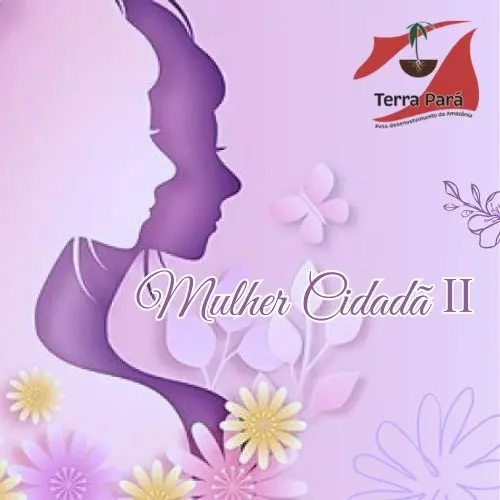
FemininoMulher cidadã II
Ver projeto →Cultural
Mulher cidadã I
Ver projeto →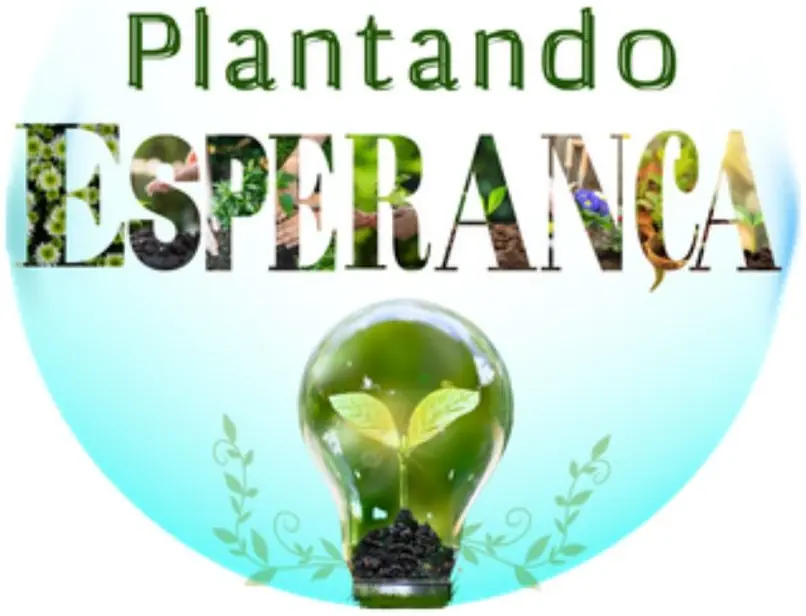
Agricultura FamiliarPlantando esperança
Ver projeto →Processo em 7 etapas
Como desenvolvemos cada projeto
1
Diagnóstico
Avaliação técnica inicial
2
Planejamento
Estratégia e objetivos
3
Projeto técnico
Documentação completa
4
Captação
Editais e crédito rural
5
Execução
Acompanhamento técnico
6
Monitoramento
Controle de metas
✓
Prestação de contas
Relatório e regularização
Diferenciais
Por que escolher a AgroVisão
Equipe multidisciplinar com profundo conhecimento do território amazônico, das políticas públicas e das exigências legais vigentes.
+100 projetos
Mais de cem projetos desenvolvidos com sucesso.
Especializado
Atendimento personalizado ao perfil de cada cliente.
Multidisciplinar
Agronomia, direito, gestão e ciências ambientais.
Amazônia Legal
Conhecimento profundo do território e das legislações regionais.
Soluções completas
Da elaboração ao monitoramento, projeto 100% finalizado.
Consultoria técnica
Orientação especializada para decisões mais assertivas.
Regularização
Fundiária, ambiental e documental em conformidade legal.
Gestão de projetos
Monitoramento contínuo com relatórios e prestação de contas.
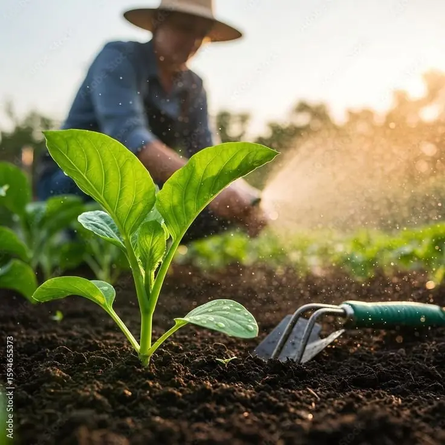